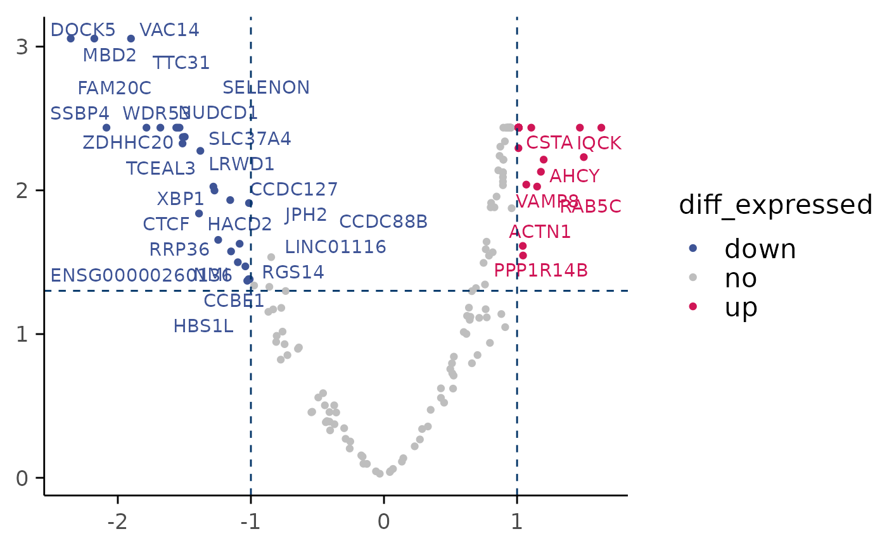

Volcano plot of differentially expressed genes
plot_volcano(
top_table,
x = "log2FC",
y = "p_value_adj",
fdr_cutoff = 0.05,
max.overlaps = 30
)Data frame with columns that contain FC and P-values, default to log2FC and p_value_adj
Name of the column with logFC values
Name of the column with adjusted p-values
Cutoff for labels to be plotted based on their adjusted p-values
Maximum number of overlaps of points for package ggrepel
ggpplot plot
file_path <- system.file("extdata", "PMMSq033/PMMSq033.rds", package = "macpie")
mac <- readRDS(file_path)
treatment_samples="Staurosporine_0.1"
control_samples<-"DMSO_0"
top_table <- compute_single_de(mac, treatment_samples, control_samples, method = "limma_voom")
plot_volcano(top_table)
#> Warning: ggrepel: 682 unlabeled data points (too many overlaps). Consider increasing max.overlaps
